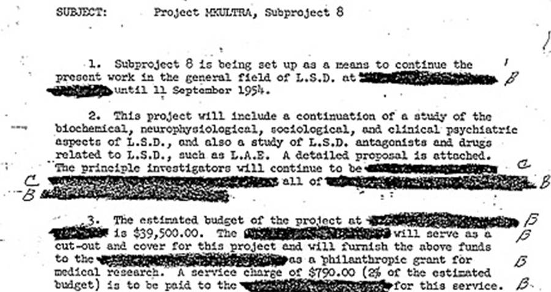

Project MKUltra
Project MKUltra was the code name for a series of investigations into mind-bending substances, techniques, and medical procedures. The goal was to develop truth serums, mind-control drugs, and determine what chemicals and methods had potential use for torture, disorientation, and espionage. The experiments started in 1953 and were slowly reduced in scope over the next 20 years before being halted in 1973.
A variety of experiments were undertaken to understand the effects of powerful drugs on unsuspecting subjects. These were often done in conjunction with hospitals and universities who claimed later they were not told what the goal of the experimentation was. At least 86 “universities or institutions” were involved in the acquisition of test subjects and administration of the experiments.
In one set of experiments, aptly named operation midnight climax, prostitutes on the CIA payroll would lure clients back to a safehouse where they would drug them with LSD. The effect the drug had on the unsuspecting victim would be observed behind one-way glass by intelligence agents and recorded.
CIA agents also had a habit of drugging one another both at work and at weekend retreats to the point where random LSD trips became a workplace hazard to see what the effect of the drug was on unsuspecting subjects. However, this resulted in at least one death when a subject developed severe psychotic behaviors after being drugged. While that death is often considered a suicide or an accident, the possibility that it was a murder is often brought up.
Other experiments were also undertaken with sensory deprivation, hypnosis, psychological abuse, MDMA, salvia, psilocybin, and the mixing of barbiturates with amphetamines to sedate a subject before giving them a massive hit of speed in hopes of making them spill their secrets.
Subjects included student volunteers, patients at mental hospitals, prisoners who both did and didn’t volunteer, drug addicts who were paid in more drugs, and the occasional random person in addition to CIA agents who got unlucky.
The author Ken Kesey volunteered for the experiments while he was a student at Stanford. He later worked the experiences into his book One Flew Over the Cuckoo’s Nest and was so attracted to the use of psychedelics that he went on to host “Acid Tests” at his home, bringing LSD to the counterculture.
Ken Kesey: counterculture icon and subject of repeated experiments in LSD usage. (Getty Images)
It has also been speculated that Ted Kaczynski, better known as the Unabomber, was experimented on as part of MKUltra when he participated in a series of experiments at Harvard in which he was verbally abused and had his personal beliefs belittled by an attorney. It must be repeated that this is mostly conjecture, though several sources point out the likelihood of it.
Did any of it work? Some of it worked, but most of it didn't.
While some of the drugs were found to make the test subjects more suggestible or pliable, none of them were the truth serums or reliable torture aids that the CIA wanted. Complicating matters, the research was highly unscientific at times, and a great deal of the data was of limited use.
In many ways, it might have been counterproductive. The counterculture was given access to LSD through the experiments and they proceeded to run in the opposite direction with it. John Lennon went so far as to mock the CIA in an interview, noting “We must always remember to thank the CIA and the Army for LSD. That's what people forget. They invented LSD to control people and what they did was give us freedom.”
The head of the project, Sidney Gottlieb, would also go on to say that his entire effort was “useless”, suggesting that the project failed to satisfy anybody. However, some elements of the program have gone on to be used in recent torture regimens with a focus on psychological torment.
How do we know about this? In 1973, then-CIA-director Richard Helms ordered all documents relating to MKUltra destroyed. However, 20,000 pages of documents were misfiled and survived the purge. In 1977, Congress organized the Church Committee and examined the records. As a result of the findings, Presidents Ford, Carter, and Reagan issued orders banning all future human experimentation without consent by government agencies, and some remittances were paid to those harmed by the tests.
How illegal was this? The project violated the Nuremberg codes, agreed to by the United States after the trials of Nazi war criminals, by administering drugs without informed consent. At least two people, Frank Olson and Harold Blauer, died as a result of being drugged without their knowledge. The true extent of psychological damage and death toll is impossible to know, as the records were mostly burned and the unscientific nature of many tests would make it impossible to determine what later events (for example, suicide) were attributable to the tests.
So, there you have it. The CIA did use mind-altering drugs on unsuspecting civilian populations and those too weak to fight back and then tried to cover it up. While most conspiracy theories are far-fetched and debunkable with two minutes of thought, some of them are entirely true.
MKUltra was a conspiracy between the government and many institutions to drug people without their knowledge and use anything learned from it for espionage purposes. Modern research into psychedelic drugs is increasingly benign, but we must remember that a great deal of what we know about them was discovered for the sake of making them weapons. A sobering reminder of what science can do without guidance.
Comments